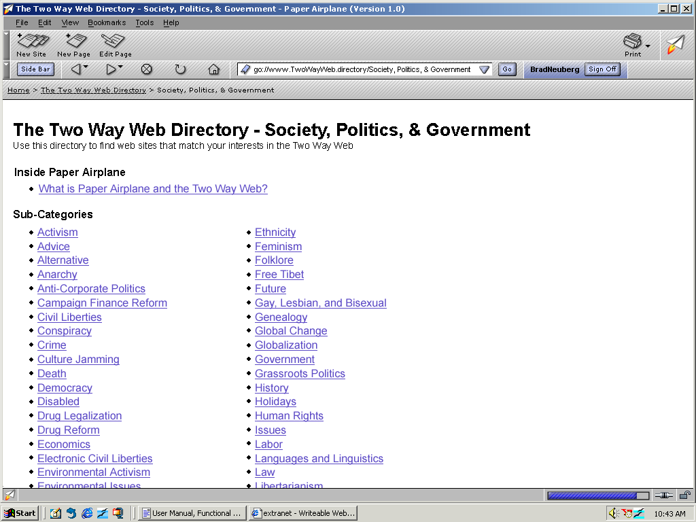

| | |
Table of Contents | Last | Next
Walkthrough - Next-Generation Browsing
The Two Way Web Directory
The Two Way Web Directory is the default home page that users see when they first sign-on and see the browser screen. Every Two Way Web Site can optionally self-categorize itself in up to three categories and sub-categories. This information is used to dynamically create a distributed, Yahoo-style listing of Two Way Web Sites:

The Two Way Web Directory
Easily find Two Way Web Sites that match your interests by navigating through the categories available in The Two Way Web Directory. Need to find Two Way Web Sites that address campaign finance reform? Simply click on the Society, Politics, & Government link to see sub-categories in this subject:

Sub-Categories in Society, Politics, & Government
Then select the Campaign Finance Reform sub-category:
Campaign Finance Reform Sub-Category Circled
Simply scroll through Two Way Web Sites that concern political reform until you find what you are looking for:

Campaign Finance Reform Sub-Category
For more in-depth information see The Two Way Web Directory